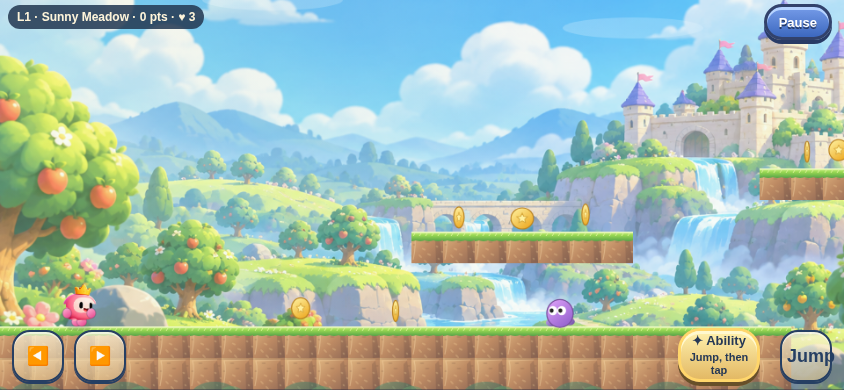

Hopper: painted refinement
Same compact crowned mascot. This candidate develops the material and lighting of the owner-preferred illustration while retaining his pink body, short limbs, original face arrangement and cheerful personality.
Pending owner approval. This page is an isolated art study. The playable game still uses its existing Hopper artwork. No replacement animation atlas has been generated.
Original approved artwork → proposed portrait
Original approved Hopper
Unaltered selection-reference crop, including its scenery.Proposed enhanced Hopper
Single illustration, transparent original PNG. Approval pending.
No heart markings, eyelashes, clothing, armor, long legs or humanoid anatomy. The crown and compact body remain the identity anchors. Originality and resemblance to the established mascot still require owner judgment.
Natural gameplay proportions
At 1× CSS scale: 48 px crown-to-ground art height around the unchanged 26×32 collision reference. On high-density screens one CSS pixel can span multiple device pixels. These are review drawings, not integrated sprites.
Existing in-game artworkProposed single-pose rendering

Current engine — original HopperSame scene — review-only painted overlay
Explicit mockup, not a screenshot of integrated gameplay.Limited animation study
Painted arms and feet are sampled from the same single illustration and articulated only on this page. Planted feet travel backward locally as the body advances; the other foot lifts and recovers. This tests silhouette, grounding and texture continuity. It is not a finished animation sheet or a promise of final facial/pose polish.
Walking study · feet alternate grounded stance and lifted recovery · no gameplay simulation runs here.